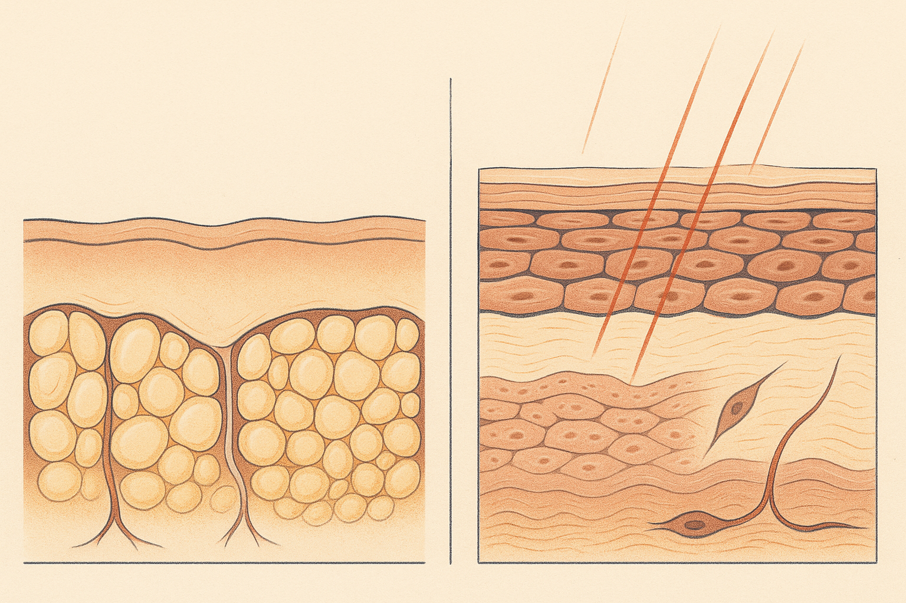
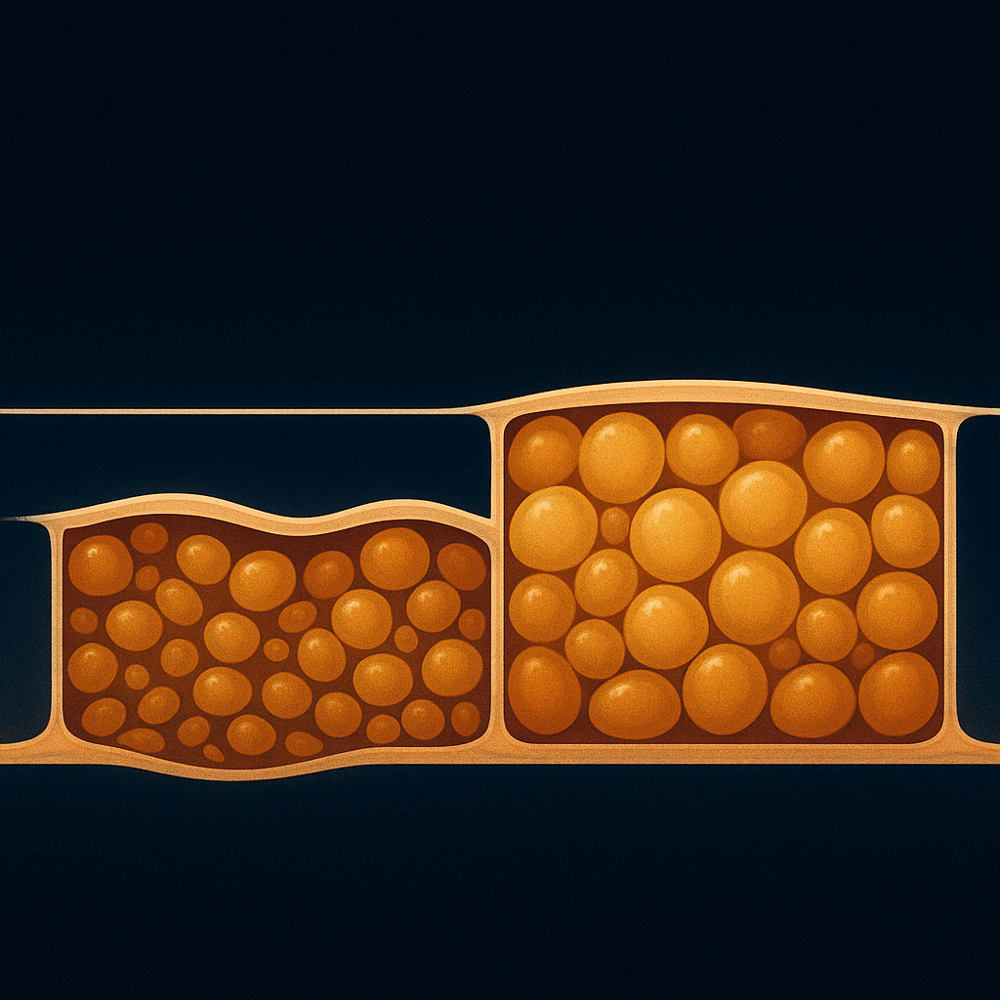
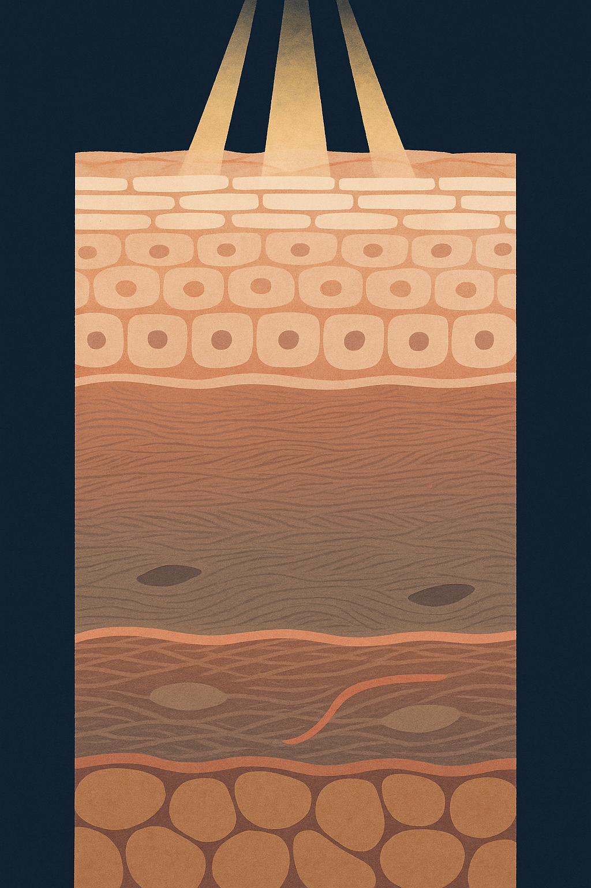

Review below. Reply approve to publish the Facebook post, or tell me edits.

In short: facial ageing runs at two different depths, the structure that sets the shape of a face and the few millimetres of skin covering it. Nothing applied to the surface reaches the first one, so working out which of the two you are actually looking at is the step that saves the most time, money and patience.
They do not thin at the same rate. They do not thin in the same direction. The cheek is not one even cushion of padding, and when anatomists dye-injected and dissected the face they found something more organised than that: the fat sits in discrete compartments, walled off from each other by fibrous partitions, each with its own boundaries and its own blood supply (Rohrich and Pessa, 2007).
That one fact reorganises how to read your own face. What most people call "ageing" in the bathroom mirror is usually two separate problems stacked on top of each other, sitting at two different depths. One is the shape of the face. One is the skin covering it. From a metre away they look like the same complaint, and almost nothing that addresses one will do anything at all for the other.
The older working model was simple and wrong: one soft mass under the skin gradually going down, like air leaving a cushion. Compartments behave differently. Adjacent pockets can change independently, so the transitions between them become visible as edges, hollows and small steps where the surface used to run smooth. Shape change is rarely a loss of everything at once. It is a loss in particular places, which is why it reads as structure rather than surface.
Then imaging took the question further. A computed tomography study comparing younger and older midfaces found the deeper fat pads reduced in volume, while the more superficial pads sat lower than their earlier position (Gierloff et al., 2012).
Read that twice, because it is the paragraph that reframes your own reflection. Part of what gets called sagging is not only tissue going slack. It is tissue that has moved, dropping into a new resting position while support underneath it thins out. Skin is the covering over that event, not the cause of it. A surface change and a support change can produce a very similar silhouette, and only one of them is a skin question.
This used to be a slow process, measured across decades, which made it easy not to notice. Rapid weight change compresses the same anatomy into a much shorter window, and facial change following GLP-1 receptor agonist weight loss has become a described phenomenon in the clinical literature (Kilic, 2025). Reviews have also begun examining skin quality alongside it (Barone et al., 2026).
Same anatomy, faster clock. None of that is a comment on anyone's body or anyone's health decisions. It is simply why a slow structural process has become visible to people who expected a change in weight, not a change in facial shape.
Here is the part worth keeping.
Fat compartments, ligamentous support, the bone underneath. This is the deep layer that sets the shape of a face: fullness at the temple, the line under the cheekbone, the transition in front of the ear. Nothing applied to the surface reaches it. No cream, no serum, no massage tool, no red light therapy and no other light-based routine moves a fat compartment or restores ligamentous support. If the change you are unhappy about is a change in shape, that is a conversation with a doctor or a qualified practitioner, and a considered one. It is not a purchase.
Barrier function, hydration, tone, surface texture, the appearance of fine lines, collagen density in the dermis. This is a few millimetres of tissue, and it is the lever a routine genuinely touches. Skin quality is also the thing most responsible for whether a face looks well or tired at any given moment, independent of its shape.
> Structure is a practitioner conversation. Skin quality is a routine.
Ruling lever one out saves people months and a lot of money. Most of the frustration in skincare comes from asking a surface product to fix a structural problem, then concluding the product failed. It did not fail. It was never operating at that depth.
You can usually tell without a diagnosis, because the two behave differently.
A volume change tends to show up as a shape change in one fixed place. The same hollow, the same small step, the same flattened area, in the same spot, looking much the same in morning light, evening light or a lift mirror. It is stubborn in a very specific way: it does not have good days.
A quality change behaves the opposite way. It reads as tone and texture across a whole region rather than a shape in one location, and it moves. It looks different after a full night's sleep, different when you are well hydrated, different at 9am and at 6pm, different under warm light and under a fluorescent tube. That variability is the tell. Skin quality fluctuates because the things that drive it (water content, barrier integrity, blood flow, surface reflectivity) fluctuate. Structure does not.
The well-supported inputs are the unglamorous ones. Daily sun protection, because photoprotection is the most consistently evidenced thing anyone does for skin quality. Barrier care, meaning cleansing gently enough that you are not stripping the lipid layer holding water in. And consistency measured in months, not days, because the dermis rebuilds slowly.
All of that operates on the second lever. Every one of those inputs is working on a few millimetres of tissue, and none of them is working on the shape underneath.
Red light therapy sits on the same lever as the rest of a routine: the skin, not the structure. At-home LED light therapy is a surface-depth input by definition, which means the honest answer to "will it lift a hollow cheek" is no, and the more interesting question is what happens in those few millimetres.
In the general literature, a controlled trial of red and near-infrared light treatment assessed patient satisfaction, fine lines, skin roughness and intradermal collagen density measured by ultrasound (Wunsch and Matuschka, 2014). That is what that research looked at, for that combination of wavelengths, in that setting. It is a description of a study, not a promise, and not a claim about any particular device. Light therapy for skin is a cosmetic device category, not medicine.
The useful move is not choosing harder. It is identifying which of the two problems you are actually looking at, then spending your money and your patience on the lever that can reach it. Structure belongs to a practitioner conversation. Skin quality belongs to a consistent, unexciting routine you can keep up for months, which is where a ten-minute daily step tends to survive and an elaborate one does not.
Name the depth first. Everything after that gets easier.
It depends entirely on what you are asking them to do. At-home LED light therapy operates on the skin lever: barrier, tone, texture, the appearance of fine lines. It does not operate on the layer that sets facial shape, so a mask judged against a structural complaint will always look like a failure, and a mask judged on skin quality is at least being asked a question it is built for.
Not in the structural sense. If what you are seeing is a fat compartment that has thinned or settled lower, no topical and no light-based device reaches that depth, and anyone telling you otherwise is selling. Where skin laxity is really surface quality (tone, texture, crepiness that varies day to day), that is the lever a routine works on.
Slower than most marketing implies. The dermis rebuilds on a timescale of months, so the sensible way to judge any routine, red light therapy included, is over weeks and months of consistent use rather than a few sessions. Anything that changes overnight is usually hydration and light, not structure in the skin.

Some of what we all call sagging did not sag. It moved.
In CT imaging of ageing midfaces, the deep fat pads thin while the more superficial ones end up sitting lower than they used to. The volume did not just go. It changed address.
Which points at something genuinely useful: the face has two separate problems running at two different depths.
One is structure. The shape underneath: fat compartments, the support holding them, where they sit.
One is the skin itself. Barrier, tone, texture, fine lines, dermal collagen.
Only the second one is a skincare question. Rapid weight change, for any reason, tends to make the structural shift visible over months instead of decades, and that is not a judgement, just anatomy moving faster.
So, a quick sort before you buy anything:
1. A shape change in one fixed spot, a fold or a hollow that reads the same every single morning? No serum and no device is the answer to that one. Knowing it saves you months of buying for the wrong problem.
2. Tone and texture across a whole area, dullness, crepiness, an uneven surface that looks different at 9am and at 6pm? That is the lever a routine actually reaches.
Which one is yours: a fixed hollow that looks the same every morning, or tone and texture that changes day to day?
## Hashtags
#SkinScience #FacialAnatomy #SkinLongevity #SkincareEducation
FIRST COMMENT (post the link here, not in the post body): If you ever want a closer look at ours, it is here: https://redermis.com.au/products/red-light-therapy-face-neck-mask

Light reaches your dermis. It does not reach your fat pads.
Two different depths. Two different problems.
Structural is the shape underneath.
Fat compartments. Support. The way a cheek sits, and the hollowing that stays in one fixed spot no matter what you put on it.
Surface is the skin itself.
Tone. Texture. Barrier. The quality of dermal collagen, and with it the look of fine lines.
Only the second one is a skincare question. Only the second one is what a light-based routine can reach.
Here is how to tell them apart in your own mirror, and it costs nothing.
A structural change looks the same in morning light, in evening light, in every mirror in the house. It does not have good days.
A surface change moves. It looks different after a full night's sleep, different when you are well hydrated, different at 9am and at 6pm. That variability is the tell.
So: same in every light means structure. Different by the hour means skin quality, and that is the one a routine works on.
Knowing which one you are looking at saves you months of buying for the wrong problem.
Ours is in the bio if you ever want a closer look.
## Hashtags
#skinscience #photobiomodulation #redlighttherapy #collagen #perimenopauseskin #ledmask
## Title
Red Light Therapy vs Facial Volume Loss: What It Can and Cannot Change
## Description
Facial ageing runs at two depths. Volume is structure: fat compartments and the support holding them. Skin quality is the dermis and the surface: barrier, tone, texture, collagen. Only the second is a skincare question, which is why a routine shifts tone and texture, not face shape. Light-based devices sit on that same surface lever, studied for tone, texture and fine lines. Naming which one you are looking at saves wasted effort. That is the trick. Save this for your next skincare reset.
## CTA
A closer look: https://redermis.com.au/products/red-light-therapy-face-neck-mask
## Hashtags
#RedLightTherapy #LEDFaceMask #SkincareScience #SkinHealth #AtHomeSkincare
Note: this pin reuses the Instagram image (instagram.png, 1024x1536, already Pinterest's native 2:3 pin ratio), with no text overlay. There is no Pinterest image prompt by design.